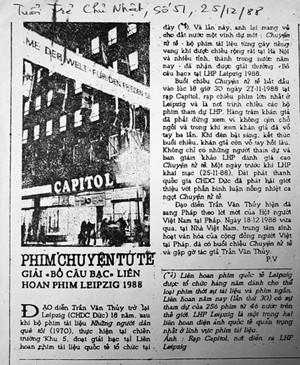

Tôi phải làm vậy vì không muốn bị người ta trùm chăn đánh chết. Nếu dạo đó tôi hèn và để bị chèn ép đến mức không ai được xem bộ phim đó thì tôi đã chết rồi.
☆
Trong 256 phim dự thi ở Leipzig 11-1988 (như báo đã đăng) thì liệu khả năng cuốn phim của tôi được giải là bao nhiêu phần trăm? Nếu nó không được giải thì tôi đành phải sống lưu vong, kiếm một cái quán ăn nào đó mà rửa bát cho đến bây giờ...
☆
Trước đây việc đi nước ngoài khó khăn lắm, ngay đến các chuyến đi thuần túy vì công việc vì nghề nghiệp cũng không đơn giản như bây giờ. Nhiều khi Liên hoan phim, hội thảo này nọ mời người này thì cấp trên thay bằng người khác, chẳng có liên quan gì đến công việc. Vì vậy mới có chuyện trong giấy mời đích danh Trần Văn Thủy (Sehr geehrter Genosse Tran Van Thuy) có ghi rõ lời mời chỉ hợp lệ với một người và không thể chuyển nhượng (Diese Einladung gilt nur fűr eine Person und ist nicht übertragbar)
Người Ðức hết sức rõ ràng, họ hiểu hoàn cảnh của tôi, hiểu việc “Chuyện Tử Tế” tới Leipzig là rất phiêu lưu khi hai đại diện của họ đã chứng kiến sự kiện lình xình xung quanh chuyện chiếu hay không chiếu “Chuyện Tử Tế” ở Ðà Nẵng tháng 3 năm 1988. Ðiều đáng chú ý là Liên hoan phim diễn ra vào cuối 11-1988 mà giấy mời họ gửi từ 10-6-1988. Họ hiểu khá rõ thủ tục hành chính ở cái xứ này.
Sát ngày lên đường tôi được mời lên họp để phổ biến quyết định của cấp trên. Cuộc họp gồm có Cục phó Cục Ðiện ảnh Bùi Ðình Hạc, thời kỳ đó Cục này gọi là Liên hiệp Ðiện ảnh, ông Cao Nghị - Cục phó phụ trách tài chính, ngoài ra còn người phụ trách đối ngoại, người bên an ninh và một số người nữa. Ông Bùi Ðình Hạc thay mặt lãnh đạo nói rằng:
- Chúng ta đã nhận được lời mời của Liên hoan phim Quốc tế Leipzig, cấp trên quyết định đồng ý cử anh Thủy đi. Ðể cho nó trọn vẹn công việc và có trách nhiệm, anh Cao Nghị sẽ làm trưởng đoàn. Anh Nghị sẽ có trách nhiệm quan sát, lo lắng, đôn đốc để làm tốt nhiệm vụ. Tức là cử hai người đi, nhưng tuyệt đối không cho bộ phim đi. Nếu để xảy ra chuyện gì, và nếu để xảy ra “Chuyện Tử Tế” có mặt tại Leipzig và chiếu ở Leipzig thì các anh, mà trước tiên là anh Cao Nghị sẽ phải chịu trách nhiệm...
Thời kỳ đó người đi nước ngoài thường được dặn dò kỹ lưỡng những điều đại loại như thế. Một trong những người có mặt trong cuộc họp hôm đó là anh Nguyễn Văn Tình, làm đối ngoại của Cục Ðiện ảnh; hiện nay giữ chức Cục trưởng Cục hợp tác quốc tế của Bộ Văn hóa thể thao và du lịch.
Khi ông Bùi Ðình Hạc nói xong, tôi hỏi:
- Thế anh đã nói xong chưa ?
Ông ấy bảo:
- Tất cả những điều tôi cần truyền đạt là như thế!
Tôi hỏi:
- Tất cả những điều anh vừa nói là tâm tình bạn bè, đồng nghiệp với nhau trước khi tôi lên đường hay đây là lệnh của cấp trên?
Ông Hạc nói:
- Ðây là lệnh của cấp trên, nhất thiết không được để xảy ra cái việc “Chuyện Tử Tế” chiếu ở Leipzig!
Tôi cũng nói thẳng:
- Anh Hạc à, nếu anh ngại những việc đó xảy ra thì tốt nhất anh làm thủ tục giữ tôi lại, bởi vì tính tôi nó khác người ở cái chỗ là tôi đã đi ra khỏi biên giới thì tôi chẳng nhớ cái gì và mọi việc đều có thể xảy ra.
Có thể họ nghĩ tôi nói như thế là nói phét. Tôi nói thêm:
- Bây giờ là sáng thứ 7 (dạo đó làm việc cả thứ bảy), còn buổi chiều nay, các anh làm thủ tục giữ tôi lại; chứ nếu qua ngày chủ nhật không động tĩnh gì thì sáng thứ 2 theo lịch bay tôi và anh Cao Nghị sẽ ra sân bay. Và chúng tôi sẽ bay ra khỏi đất nước, khi đó tôi không biết chuyện gì sẽ xảy ra .
☆
...Sáng thứ 2 tôi với ông Cao Nghị ra sân bay đi Matxcơva rồi đến Berlin. Từ Berlin chúng tôi đi ô tô hơn 300km đến Leipzig, một thành phố ở phía Ðông Nam nước Ðức. Ðến nơi, chúng tôi được chở thẳng tới Ban tổ chức Liên hoan phim làm thủ tục, nhận phù hiệu, chương trình, tiền bạc và giấy giới thiệu để về khách sạn Astoria nhận phòng. Khách sạn Astoria là khách sạn cổ và sang trọng nhất của thành phố Leipzig lúc bấy giờ.
Chúng tôi vừa nhận phòng được khoảng nửa tiếng thì có tiếng gõ cửa, chưa kịp hỏi ai đấy thì nắm đấm cửa tự xoay, cánh cửa mở ra và xuất hiện một người tự giới thiệu:
- ... Tôi là công an của Ðại sứ quán Việt Nam tại Berlin, được Ðại sứ đặc trách cử về đây gặp các anh để tìm hiểu và khẳng định xem phim “Chuyện Tử Tế” có mặt ở đây không vì lệnh ở nhà điện sang không được để bộ phim xuất hiện ở Liên hoan phim .
Tôi bảo tôi chỉ là đoàn viên, người phụ trách đoàn là ông Cao Nghị. Câu chuyện cứ loanh quanh: “... các anh có mang gì không. Ông đại sứ đang chờ ở đầu dây tại Berlin...”
Ông Cao Nghị vốn thật thà, hiền lành, ông lại bị bệnh tim nữa, tôi còn phải đỡ đần và chỉ lo ông bị làm sao thôi. Tôi thấy tội nghiệp ông Nghị, từ góc độ nào đấy tôi thấy tôi hơi ác bởi ông là người tử tế mà bị người ta ấn vào tình huống kẹt như thế này. Ông không biết gì cả cho nên cứ thanh minh:
- Khổ lắm, cái thùng phim nó to lắm chứ nó có bé như cái hộp diêm đâu mà bảo giấu giếm được, chúng tôi đi qua hải quan có giấy tờ thủ tục đàng hoàng, để có được bản phim đấy chỉ nhà nước có chứ sao cá nhân ai có được bản phim ấy mà anh đi hỏi điều đó .
Nhưng viên công an bảo:
- Trong chương trình ngày 27 tháng 11, 8h30 tối tại rạp Capitol có lịch chiếu bộ phim này.
Ông Cao Nghị nói:
- Thế thì anh lên ban tổ chức Liên hoan phim mà hỏi. Chúng tôi vừa đến, mới chỉ vào phòng này thôi, bảo ngủ đây thì tôi ngủ đây thế thôi. Ðã kịp rửa mặt ăn uống gì đâu!
Lúc bấy giờ cậu em ruột của vợ tôi ngồi phòng trong, em tên là Dũng, Nguyễn Tiến Dũng, thấy câu chuyện căng quá, lo sợ, mặt tái dại. Khi tôi vào phòng trong lấy giấy tờ thì Dũng khẽ bảo:
- Anh ơi, anh phải lùi thôi, anh phải nghĩ đến chị và các cháu, anh mà bước thêm bước nữa thì không có đường về đâu .
Tôi ghé vào tai cậu em:
- Sau gót chân của anh là bờ vực, không thể lùi được một milimét nào .
Tôi phải làm vậy vì không muốn bị người ta trùm chăn đánh chết. Nếu dạo đó tôi hèn và để bị chèn ép đến mức ở nước ngoài không ai được xem thì coi như tôi bị hạ huyệt rồi.
Trong 256 phim (như báo đã đăng) thì liệu khả năng cuốn phim của tôi được giải là bao nhiêu phần trăm? Nếu nó không được giải thì tôi đành phải sống lưu vong, kiếm một cái quán ăn nào đó mà rửa bát cho đến bây giờ.
Ðiều tôi sợ nhất là phải sống ở nước ngoài, phải sống xa quê hương, mồ mả ông cha. Tôi quen mùi hương mùi khói, mùi rơm mùi rạ. Gần ba chục năm trời nay, tôi cứ nghĩ nếu như tôi sống lưu vong thì đâu có được “Tiếng Vĩ Cầm Ở Mỹ Lai”, “Nếu Ði Hết Biển”, “Người Man Di Hiện Ðại”, “Vọng Khúc Ngàn Năm”; đâu có những xóm làng được kiến thiết cầu, đường, trường học khang trang như thế.
Viên công an nói đi nói lại mãi với ông Cao Nghị chán rồi mới đến gặp Ban Tổ chức Liên hoan phim. Có lẽ anh ta tỏ ra là người có quyền, nói năng thế nào đó không biết, nhưng Ban Tổ chức trả lời: “ Chúng tôi chỉ có thể nói chuyện với Bộ Văn hóa Việt Nam ”.
Suốt trong những ngày ở Leipzig, từ ngày 20 đến ngày 27 chờ người ta chiếu bộ phim “Chuyện Tử Tế”, người tôi gầy rộc, không ăn không ngủ được.
Ðể được cái gì? Nếu phim không được giải, về nước tôi là tội đồ, không về là sống lưu vong, mồ ông mả cha ông, bổn phận bỏ đó, gia đình vợ con bạn bè bỏ đó...
Tôi không hề tìm kiếm vinh quang gì, tên tuổi gì, tôi chỉ khát khao làm điều có ích. Tôi tưởng tượng, khi xem bộ phim đó người nước ngoài sẽ cảm động và có thiện cảm với người Việt Nam. Họ không nghĩ đấy là phim của Trần Văn Thủy mà nghĩ là phim của Việt Nam.
Những người quản lý phim ảnh có cơ may làm sang mà không biết đường xử sự, họ lại coi tôi như một tội đồ. Mẹ tôi thì khóc, khóc triền miên khi tôi cứ dính vào việc này việc kia “ Con ơi con, sao khổ thế con! Mẹ thấy thằng Phúc nó có thế đâu... ”
Phúc là con rể bà, chồng của em gái tôi - nó đi làm phim vừa vui vẻ vừa mang trứng gà, trứng vịt về. Cậu này làm phim khoa học nên đi đâu người ta thường biếu quà, cụ vui nên cụ bảo “ Ðấy, làm phim thì phải như nó chứ mẹ thấy con làm phim xầm xầm xì xì như là buôn bạc giả, mẹ lo lắm con ạ, không ngủ được con ạ ”!
☆
Tôi sống trong một tình cảnh như thế. Trước khi sang Ðức, tôi đã có lời mời của Hội Việt Nam tại Pháp và tôi đã được ông Trần Ðộ kí quyết định cho đi. Tôi đến Ðại sứ quán Pháp làm visa nhập cảnh. Thật ra, việc sang Pháp theo lời mời của bạn bè là điều may mắn, tôi cũng rất háo hức vì chưa đặt chân lên nước Pháp bao giờ. Nhưng điều quan trọng hơn cả đối với tôi trong hoàn ảnh này là phải có đường lui nếu gặp phải trường hợp xấu quá. Ðường lui đó là nước Pháp. Tôi có thể ở lại đó.
Chiều 27, tôi nhờ cậu em trông nom ông Cao Nghị. Tôi dặn:
- ...Em đưa anh Cao Nghị về ký túc xá, lo cho anh ăn nghỉ tử tế, chỉ nên uống rượu vang. Sau đó phải cố gắng bịa ra lý do gì đấy giữ anh lại ngủ qua đêm, đừng cho anh về khách sạn hoặc đến rạp chiếu phim .

Báo Tuổi Trẻ Chủ Nhật, số 51 ngày 25-12-1988
Dũng làm đúng như thế, em mời ông uống rượu vang nhẹ rồi nói rất thân tình:
- Thôi anh ơi, bây giờ khuya rồi mà tuyết bắt đầu rơi. Ðêm nay anh nghỉ lại đây với em rồi sáng mai em đi làm em đưa anh về khách sạn .
Trong khi đó tôi ra rạp Capitol, quang cảnh xảy ra đúng y như bài báo trên Tuổi Trẻ Chủ Nhật ngày 25-12-1988 đã viết, hết chỗ ngồi, người ta đứng đông nghịt, đông không thể tưởng tượng được và trong khi xem người ta vỗ tay ba lần.
Xem xong tất cả rạp lại đứng lên vỗ tay. Bạn bè tôi đông lắm, bạn học ở Nga với nhau, bạn quen biết nhau ở các Liên hoan phim, các Hội thảo quốc tế... Họ reo hò rồi đưa tôi về khách sạn, rượu hoa đầy ở tầng trệt. Tôi nói:
- Vui quá, tôi rất cảm ơn, nhưng cho phép tôi bận một chút.
Tôi lên lầu, lấy toàn bộ đồ đạc đã chuẩn bị sẵn, rồi để lại tờ giấy đã viết sẵn:
“ Anh Cao Nghị thân mến, tôi có việc đi Berlin mấy ngày để mua vé đi Paris. Xin anh ở nhà ăn uống giữ gìn sức khỏe, em Dũng lo cho anh mọi chuyện. Mọi việc liên quan đến phim hoặc giải thưởng, dù có hoặc không, xin anh cho tôi được quyết định ”.
Tôi phải viết vậy vì tôi sợ rằng ông Nghị sẽ có ý kiến với Ban Tổ chức về việc nọ việc kia. Tôi đặt tờ giấy lên đầu giường của ông và cầm tất cả đồ đạc biến ngay khỏi Leipzig.
☆